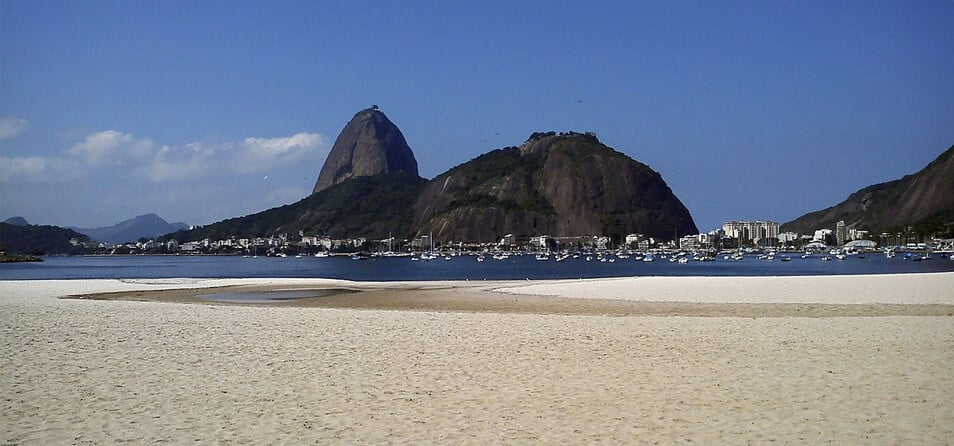

Os Lençóis Maranhenses se formaram há cerca de 5 a 7 mil anos, e ainda estão em processo de formação. A areia é transportada para a costa por correntes marítimas e exposta pela variação entre maré alta e baixa. A areia é composta principalmente por quartzo, o que dificulta a solidificação e facilita o arrasto pelo vento. As barcanas formadas pelo vento se juntam e formam cadeias onduladas chamadas barcanoides, que são a origem dos Lençóis Maranhenses.Sua formação decorre basicamente pelos sedimentos que são levados até a costa do Maranhão por correntes marítimas (um tipo de rio embaixo do oceano) e pela variação entre maré alta e baixa que deixa esses sedimentos expostos
Botafogo

A praia de Botafogo, assim como o bairro, leva este nome em homenagem a João Pereira de Souza Botafogo, capitão-mor da capitania de São Vicente, que morava na região. Esse nome também inspirou a criação do Botafogo de Futebol e Regatas, um dos times mais populares do Rio de Janeiro. A praia de Botafogo não é apenas uma das melhores praias do Rio de Janeiro. É também um dos melhores lugares da cidade para ver o famoso Pão de Açúcar. Esse morro se tornou em um verdadeiro símbolo e, junto com o famoso Cristo Redentor do Corcovado, é um dos principais emblemas atuais da cidade.
Atrações:
- morro da urca.
- pão de açucar
- Caminhar pela enseada da praia de Botafogo.
Ilha do Prumirim

A Ilha do Prumirim, em Ubatuba, não perde em nada em beleza para a vizinha mais famosa, a Ilha das Couves, uma das praias mais bonitas do Brasil Com mar transparente, longa faixa de areia branquinha, fácil acesso e pedras que formam belos cenários para fotos, a Ilha do Prumirim é visita imperdível para quem gosta de porções de areia à beira-mar.
Com mar calmo e raso, a Ilha do Prumirim é excelente opção para a prática de snorkel. Leve a máscara para não perder os peixes e tartarugas que passam por lá e fazem a festa dos turistas. De lá, aproveite ainda a tranquila Praia do Prumirim, onde há bons restaurantes e espreguiçadeiras para relaxar em meio às praias de Ubatuba.:
- morro da urca.
- pão de açucar
- Caminhar pela enseada da praia de Botafogo.

.jpg)